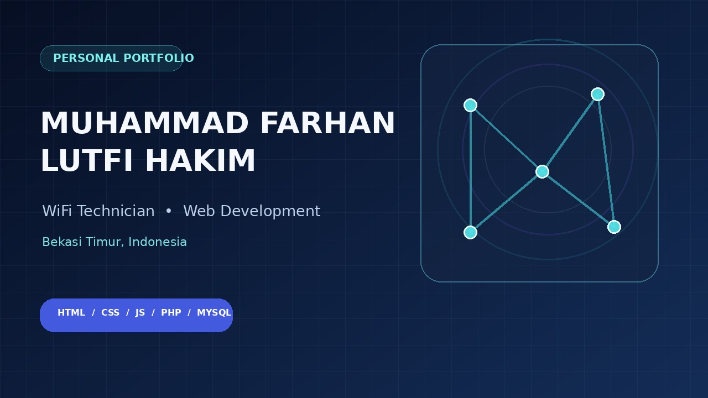

PROJECT / 001Aplikasi Warga
RT 011 RW 002
Proyek pembuatan aplikasi untuk lingkungan warga RT 011 RW 002, Kelurahan Bekasi Jaya, Kecamatan Bekasi Timur. Rincian fitur dapat ditambahkan sesuai fungsi yang tersedia pada aplikasi.